Analizamos su sistema actual, estimamos el ahorro y le decimos si realmente es candidato a retrofit. Sin reemplazar toda la unidad — sólo el sistema de ventilación.
Scroll
Un ventilador de banda y polea no sólo consume más — acumula riesgos y costos que se vuelven más onerosos cada año. Si su equipo tiene más de diez años, probablemente ya lo está pagando.
Desgaste constante. Tensado periódico. Reemplazo frecuente. Cada paro de mantenimiento cuesta tiempo y producción.
Los motores AC operan a velocidad fija, consumiendo energía máxima aunque la demanda real sea baja. Sin variador, sin eficiencia en carga parcial.
Un solo ventilador significa un único punto de falla. Si falla, el sistema para — y con él, la operación del edificio o planta.
Las transmisiones mecánicas generan vibración que se transmite a la estructura, deteriorando componentes y aumentando el nivel sonoro.
Cambio de bandas, lubricación de rodamientos, balanceo de impulsores — ciclos de mantenimiento que no desaparecen, sólo se repiten.
Velocidad fija o con variador externo. Sin integración directa al BMS. Sin monitoreo en tiempo real ni capacidad de responder a la demanda actual.
¿RECONOCE ALGUNO DE ESTOS SÍNTOMAS EN SU SISTEMA?
Conozca la SoluciónEl retrofit sustituye únicamente el conjunto de ventilación — motor, bandas, poleas y rodamientos — por un muro de ventiladores EC montado dentro de su manejadora existente. Misma AHU. Nueva eficiencia.
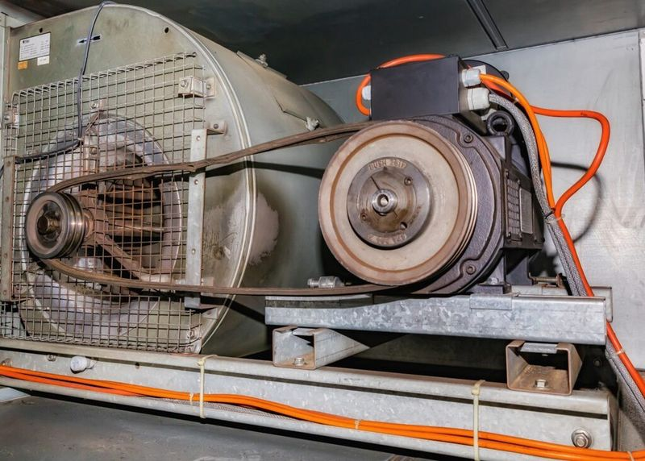
Ventilador centrífugo con motor AC, banda y polea. Alto consumo, mantenimiento constante, sin redundancia.
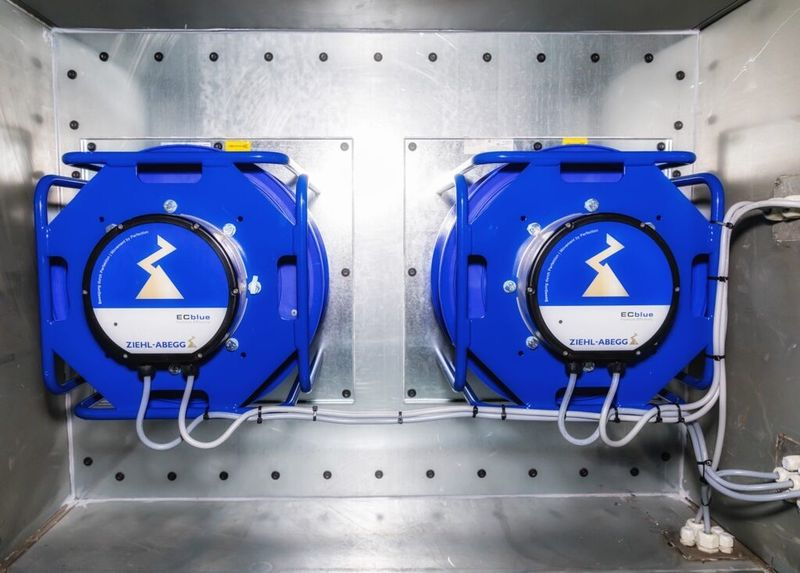
Muro de ventiladores EC en paralelo. Acoplamiento directo, 90–95% de eficiencia, redundancia N+1.
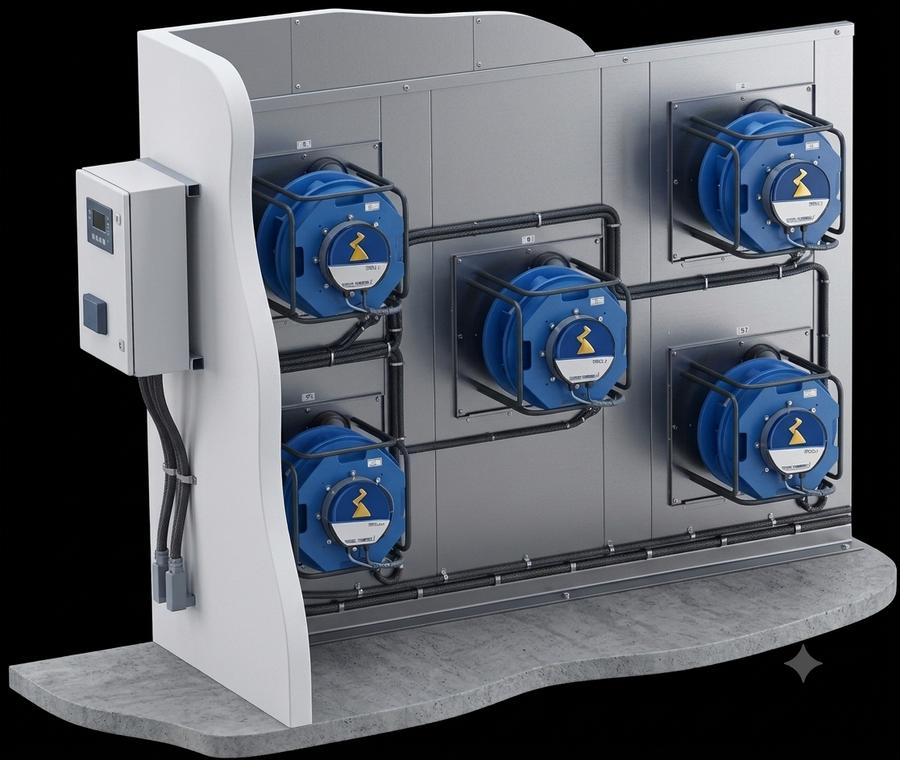
Motor EC IE5 con VFD integrado y acoplamiento directo. Sin pérdidas por transmisión mecánica. El ahorro es medible desde el primer mes de operación.
Si un ventilador falla, los demás aumentan su velocidad y mantienen el caudal. Reduce el riesgo de paro para aplicaciones donde el flujo de aire es crítico.
Los ventiladores EC son compactos y ligeros. Pasan por puertas y ascensores sin grúas ni demoliciones. La instalación toma horas, no semanas.
Sin bandas, poleas ni rodamientos que lubricar. Acoplamiento directo con arranque suave. Ciclos de mantenimiento significativamente más largos.
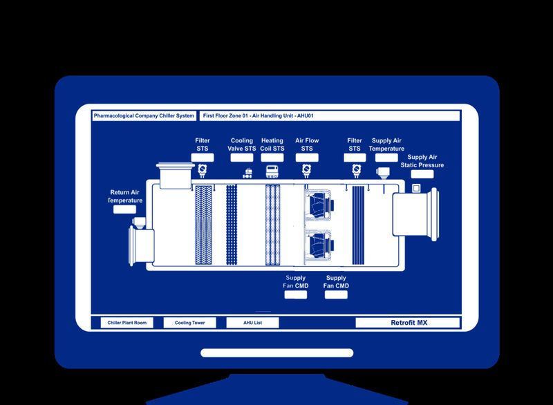
El sistema EC se integra directamente a su automatización existente. Control centralizado de velocidad, lectura de variables en tiempo real y alarmas — sin controladores intermedios ni cableado adicional complejo.
El controlador ajusta la velocidad según las condiciones requeridas y mantiene los ventiladores dentro de rangos predefinidos, garantizando gestión precisa y eficiente del flujo de aire.
El impacto real de cambiar a un muro de ventiladores EC, en los indicadores que su operación necesita mejorar.
50–60% de reducción en el consumo del sistema de ventilación. Motor EC IE5 con VFD integrado — sin desperdicio en carga parcial ni en horas de baja demanda.
Si un ventilador falla, los demás compensan automáticamente. Reduce el riesgo de paro para aplicaciones donde el flujo de aire continuo es indispensable.
Plug & Play. Sin grúas, sin demolición, sin modificaciones estructurales. Los ventiladores pasan por puertas y ascensores — instalación en horas, no en semanas.
Sin bandas, poleas ni cojinetes que lubricar. Acoplamiento directo y arranque suave extienden la vida útil del equipo y reducen los ciclos de mantenimiento correctivo.
El muro de ventiladores EC no es sólo para manejadoras de aire — optimizamos cualquier equipo que mueva aire con un ventilador ineficiente.
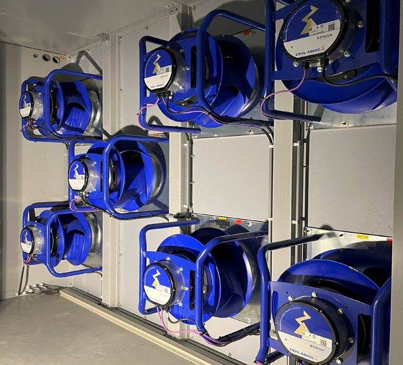
Reemplazamos el ventilador de banda y polea por un muro de plug fans EC con redundancia N+1 y sin variador externo.
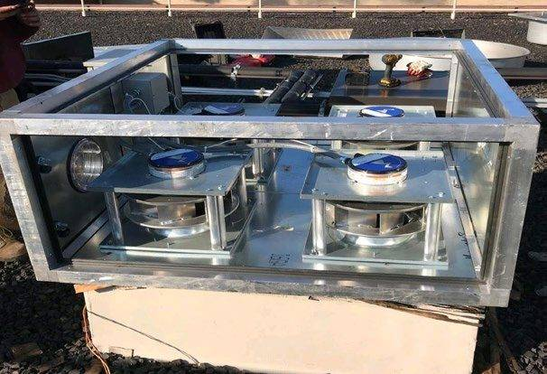
Velocidad variable o fija para flujo óptimo de aire. Hasta 6 dB(A) menos de ruido y vida útil de más de 100,000 horas.
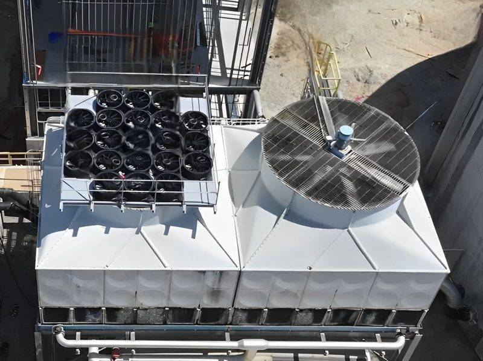
Múltiples fans EC axiales IP55 reemplazan el gran ventilador convencional. La foto muestra el antes y después en la misma instalación.
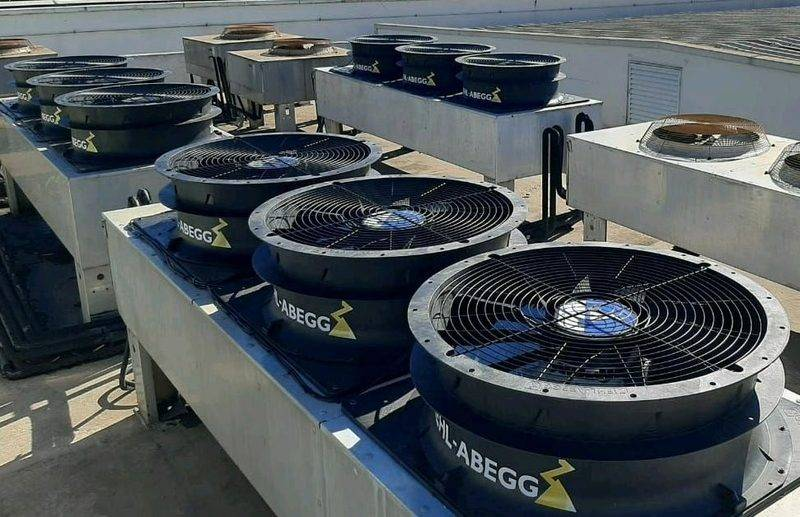
Velocidad ajustada por señal de presión de refrigerante — sin desperdicio en clima frío ni en baja carga. Operación silenciosa en azoteas.
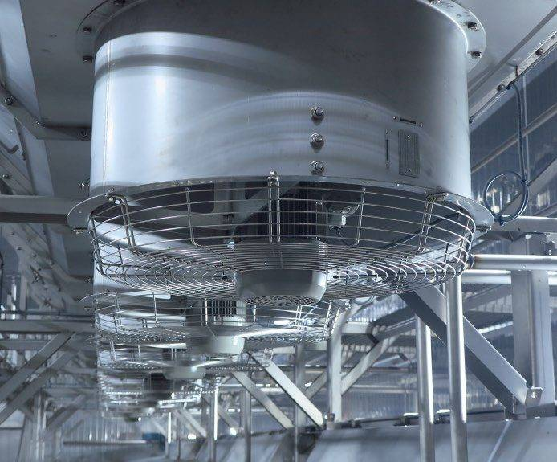
Flujo uniforme en la succión mejora la transferencia de calor hasta 15%. Apto para ambientes húmedos, sales y limpieza frecuente.
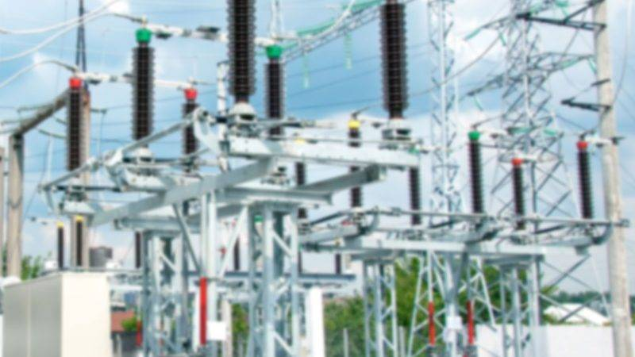
Velocidad controlada por temperatura del aceite dieléctrico. Alta confiabilidad crítica — compatible con ONAN, ONAF y OFAF.
Ajuste los valores de su sistema actual y vea el ahorro estimado con un retrofit EC. Ahorro típico: 55%. Resultados reales según diagnóstico.
¿Desea un estudio técnico detallado para su instalación?
Solicite una Cotización GratuitaUn proceso probado que moderniza su sistema HVAC con diagnóstico detallado y puesta en marcha controlada.
Visitamos su instalación y analizamos la manejadora (AHU) actual: flujo de aire (CFM), presión estática, geometría y estado de los componentes. Identificamos las oportunidades de ahorro y le decimos honestamente si su sistema es candidato a retrofit.
Configuramos el muro de ventiladores EC a la medida exacta de su equipo: número de ventiladores, distribución en la pared divisoria (bulkhead) y estrategia de control. Incluye propuesta con estimación de ahorro verificable.
Retiramos el ventilador AC original y montamos el muro EC. Gracias al cableado Quick-Connect y al diseño modular, la instalación toma horas con mínima interrupción a la operación. Los ventiladores compactos pasan por puertas y ascensores — sin grúas, sin demolición.
Energizamos el sistema, balanceamos el flujo y configuramos el control 0–10 V o la integración al BMS. Conectamos el monitoreo ZAcore para supervisión en tiempo real y mantenimiento predictivo. Le entregamos verificación del caudal alcanzado.
La instalación es Plug & Play. Sin demolición. Sin grúas. Con diagnóstico y puesta en marcha controlada.
Inicie su ProyectoSistemas HVAC modernizados con muros de ventiladores EC, operando en edificios reales en México.
Monterrey, NL
Apodaca, NL
San Pedro, NL
Querétaro, QRO
Ciudad de México
Saltillo, COAH
Guías técnicas y explicaciones sobre los conceptos clave detrás del sistema de ventiladores EC.
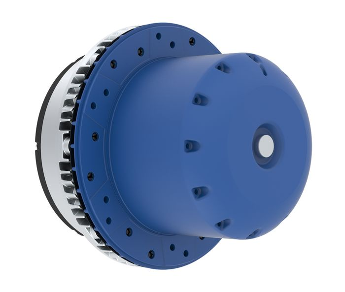
Motor de corriente continua sin escobillas con electrónica integrada. Eficiencia IE5 de 90–95% frente al 55–70% de un motor AC convencional.
Múltiples fans EC en paralelo sobre un tabique en el AHU. Reemplaza el ventilador centrífugo único con mayor eficiencia y redundancia N+1.
Evaluación, diseño, instalación y puesta en marcha. Todo en horas o días — sin grúas, sin demolición, sin parar operaciones.
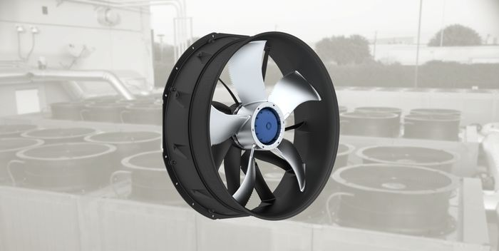
¿Por qué IE5 supera a IE3? Comparativa de eficiencia, mantenimiento, ruido y control entre tecnologías.
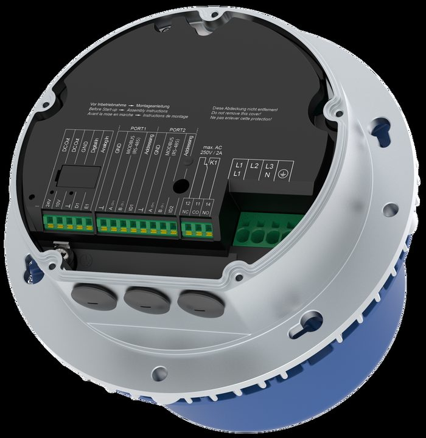
La fórmula real: kWh ahorrados = potencia × horas × días × 55%. Con ejemplo de un ventilador de 75 kW operando 350 días.
Los ventiladores EC se integran directamente al BMS del edificio por BACnet o Modbus. Control, monitoreo y alarmas sin controladores intermedios.
Cuéntenos sobre su sistema actual y le ayudamos a diseñar el retrofit ideal. La evaluación es gratuita y respondemos en menos de 24 horas.
Si su sistema no es candidato a retrofit, se lo decimos honestamente. Sin costo, sin compromiso.